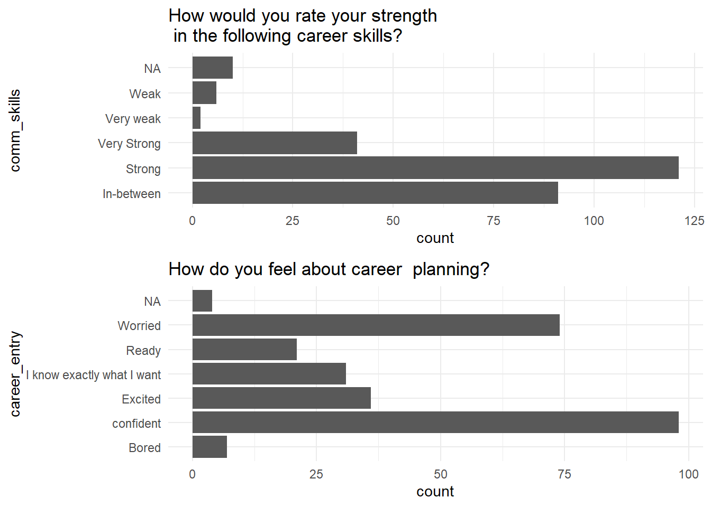

Assessing graduates readiness for job market skills
Zahid Asghar, School of Economics, Quaid-i-Azam University
Abstract
Employers are facing a great chasm between skills currently prevailing and skills employer require. Future of jobs and educational institutions are very uncertain. In a changing world, it is important to assess our graduates readiness for jobs with skills in demand in the market. This study is aimed at how digital revolution, new technologies, artificial intelligence may lead to have major disruption in future jobs and how our graduates are equiped with desired skills. Opinion survey conducted from recently qualified/last year university students and MPhil/PhD students indicate element of worriness, lack of awareness of future uncertainties and relatively more focus on hard work than soft skills. Absence of career couseling and right places to get relevant skills also came out as some major factors for students poor readiness for market besides their poor performance in academics. It has been observed that our graduates are very hard working but lack most of other soft skills which are in high demand in digital era where humans have to work with machines more than before. Our graduates are not exposed to culture of continuous learning.Universities business as usual approach seems a complete disconnect for their readiness to meet the challenges of the 3rd decade of the 21st century.
Keywords: Future jobs, Future of Universities, Time vs Learning goals
Introduction
Both future of tens of millions of burgeoning youth and economic growth of Pakistan are dependent on the type of learning ecosystem we are going to have. Skills inequality is also one among differing degrees of inequalities. Sustainable development requires certain kind of skills that come with a formal education. This is also called in economics jargon: skill-biased technical change. In addition, there are informal know-how : tacit skills which develop when one lives among other skilled workers. There is an increasing skill gap in almost all of the occupations ranging from jobs of car mechanics to digital services providers. There is need for significant effort and deliberate practice to think expansively to know what steps are required for uncertain future work. If we will invest in developing a lhning ecosystem, our burgeoning youth will be equipped with relevant skills to do well in the jobs of tomorrow. The dilemma is that neither educational institutions nor industries/companies are helping to prepare to over skilling gap and bridge skill inequalities. Academia has not been out of its comfort zone and trying to produce research which helps it to reach higher grade instead of focusing on imparting skills which are in high demand. Companies are not investing in training to develop requisite skills. Many of these companies prefer to buy talent instead of building talent with high level of professionalism. This has seriously deteriorated the capacity to cope with challenges posed in the third decade of the 21st century Weise (2021). Digital revolution and Covid-19 pandemic disruption has exposed an ever increasing skilling gap at the globe, in general and in a developing country like Pakistan, in particular. Simultaneously, this has posed serious challenges to universities to continue their business as usual.@ijaz2019
Main objective of this study is to highlight that with penetration of artificial intelligence, machine learning, big data and other digital techonologies has posed serious challenges to those whose jobs are performed in a routinely manner. Secondly, how universities can play a role and what will be future perspective of universities after online learning platform has become fully functional. What is future of universities without digital emersion and will physical universities continue to operate after 10 years from now.
Thirdly, what kind of learning ecosystem is required where learning outcomes will be fixed while making time a variable unlike practice so far in vogue where time is fixed and learning is a variable. Most of Pakistani universities are suffering from serious financial crisis besides serving a very small fraction of students at tertiary education. Data collected on future job challenges summary will help us to understand how our youth is aware of these challenges and what is its understanding about future emerging challenges with possible skill gaps.
Future of jobs and skills
Future of jobs is uncertain due to rapid changes in the past 50 years in all spheres of life all over the globe. According to Coyle (2021)Advances in digital technologies, robotics,and AI are coalescing to alter the shape of work, automating routine tasks and requiring jobs for humans to be repackaged as non-routines ones. Besides immense benefits of digital economy, it is clearly helping drive major inequalities of wealth and power and disrupting existing industrial activities and jobs. Due to medical and technological advances, life expectancy has increased from 30 years to 70 years and 80 plus years in the developed world. With increased life expectancy and rapidly evolving technological changes, future of jobs has become uncertain. Many jobs which are available were not there and many more will emerge which are not available now. What kind of skills and education should be imparted is not known. According to Sohail Inayatull, often organization think when some disruption happens or they miss something. Futuristic thinking means that working on problems before some structural change makes one redundant. According to him, often people think about the future, it is out there- Robotic, Space travel, etc. Future is not like an empty space, it is like the past. It is an active aspect of the present and thinking about the future is to as change today.
Education through exploration
Portable supercomputers somehow attached to the human being is now a transformative thing. It’s going to be the same as clothing, electricity, refrigerators, and running water, and toilets. According to Global Freshman Academy : core knowledge, advancing ideas allot for that is still there. The future of higher education is uncertain and many potential futures exists. Things are moving faster and faster. What worked 10-20 years ago is not going to work 3 years from now or 5 years from now. We have to be very systemic about sustainability and technology when we think that in order to make a really affordable, accessible, quality learning experience, we have to prepare for growth ahead of time. Continuous learning is important because education is going to change as things are moving faster, new technologies are emerging, skills to use those new technologies are in high demand. Therefore, it is not viable that a 4-year education, once in a lifetime, will serve one for the next 40/50 years. There are 100s of courses available for online learning but its important that universities design their own courses as per local needs. As a result, universities role has also changed. Instead of imparting certain kind of skills, universities have to think in learning ecosystem and have to strive to enable students to learning path so that after completion of degrees, students can learn at their own. There is urgent need to change learning paradigm from enabling students to learn once mode to a continuous habit of learning. Similarly, during the next 5 years, many new jobs will appear. How can an individual or society meet this challenge?
These must be in English language but while teaching, there is no harm if local language can be used or can be bilingual. Local case studies will help to engage students better.
Universities need commitment to the promotion of lifelong learning through its academic programs and promotion of good citizenship through community-based learning process. People’s whom jobs will be abandoned don’t have skills for new jobs to be created. It is not feasible for most of such people to get education at campus even if there are such upskilling programs. Majority of the jobs are linked with soft skills for which physical labs are not required. Harvard Business School survey revealed that most businesses leader prefer to invest in technology rather than overhaul complex human capital management Porter and Rivkin (2014). Focus is more buying a talent instead of building a talent. Culture of retaining and attracting talent is absent. No steps are taken to accelerate a new and transformative human capital development agenda for the work of future. “And now that future is our present of work”.
Role of Universities in Knowledge Economy
There is lot of lip service to knowledge economy without realising what it is and what its demands are, and how can a nation prepares itself for the same. Due to increased life expectancy over time, it is hard to imagine a straight line from education to work and, finally, retirement. 2 or 4 or even 6 years college front-loaded at the beginning of 80 to 100 years life seems inadequate. There is a need for a paradigm shift from default mental model Learn, Earn, Rest to Learn, Earn, Learn, Earn,… for 10 to 12 jobs changes in one’s life time. Learning and work have become inseparable, and it is knowledge economy or continuous learning. There is complete disconnect what is supplied and what is the demand in the market. I restrict myself here to role of higher education in meeting this challenge of knowledge economy.
Higher education system is stuck in first transition from young adulthood to work force. There is debate whether universities should produce graduates with skills matching with jobs or graduates should follow a broader general skill. There are strong arguments on both sides. But research shows that graduates who start their career path at lower level than their qualification are highly likely to serve at lower level except few disciplines. Secondly, surveys at entry level indicate that majority of them join college for getting skills to get job in the market. Thirdly, 50 to 70 years work life demands that job skills are must for a graduate. It is not true to think college education against workforce training. As economist Anthony P. Carnevale writes: “The inescapable reality is that ours is a society based on work. Increasing the economic relevance of education should, if done properly,extend the ability of educators to empower Americans to work in the world, rather than retreat from it.” Supply-Demand Mismatch has become a dominant issue. There is a need to have symbiotic relationship among learners, learning providers and employers Arts and Sciences (2017). According to LearnLaunch estimates for 2015-2018, more than 240 new companies secured funding to address supply-demand mismatch issues, workplace competencies, technical skills, and formal and informal training making up a market place of workforce in excess of billion Colin Magee and Astashkina (2018).
Career Counseling and Support
There are lot of online learning opportunities but many often ask that they dont have access to trustworthy sources from where they can get an idea from which source to learn. Unlike consumer common products used in Pakistan, there are not much reviews about learning platforms. Some complains that online learning training are either below quality or fake and charge hefty amounts to participants. Workers often ask how to make sense of their options but there is not sufficient information available on the matter. Potential consumers of online education encounter a black box. A survey from university graduates mentions that they are performing poor in studies because no right counseling was provided to them when they joined BS-graduate at college level. Similarly, gaps exists between learners, learning providers and employers Neither side understands clearly what the other sides need. Adult learners need guidance and are in need of mentors. Most of them are unable to move on a learning curve at their own, therefore, they need guidance. With human help, adult learners can make their online learning more effective. Learning and upskilling alone are not enough. Codding apprenticeship, legal services, food stamps, health care, employment assistance It is becoming difficult for youth to spare mental energies to creativity due to increasing pressure of earning livelihood. Mental energies not free to put but survival. Despite a number of free learning opportunities, how can they fit in extra learning along with day-to-day struggle to survive? Guidelines to reskilling/upskilling are not available, and it is not possible for workers to improve their skills and once they get out of job, they hardly find any working opportunity afterward due to change in required skills. Networking and social capital are just like assets as one can utilize these to perform many assignments efficiently. Office staff needs continuous support and their managers need training as well. But there is a dominant culture of management in Pakistan, so management and other leaders often say “Oh, I have managed people before, I dont need training.” Continuous support from education leaders/managers have significant long-term benefits for new workers as they prepare for success in the new economy.
Future of Universities
According to Transformation 2050 book, due to demographic transitions, digitalization, globalization and recent pandemic covid-19 disruption, higher education across the globe is in process of massive changes. Unfortunately, Pakistani university culture is like a factory model or the forced-feed one which has reached its limits but unfortunately our higher education leaders don’t know how to move forward. Leadership should not have vision and courage to lead to future but also make this process participative and inclusive Inayatullah and Ithnin (2018). Universities are at the most trying to build themselves to attain status as opposed to broad set of institutional outcomes having utility for the society.
To get their improved ranking, they are rejecting more students than accepting. How universities can transform to have inclusive learning and using technological changes can provide education to all at a very low cost. This changing role of universities will create a demographic dividend for Pakistan which may play an active role for economic prosperity besides reducing skill inequalities. Changing university education by having full time in person to digital emersion for online students, part time learning for workers and courses for people of every age will help to have opportunities to excel now and in future. This study contributes to reimagining university education to tap opportunities created by covid-19 disruption and enabling graduates to learn the process of getting skills. Future jobs skills are hardly known to anyone. Traditional university education system is misaligned with current job market and simply adding technological learning management system on it will not resolve the issue.There is a huge gap to bring educational system at par with emerging needs of the hour. Simple singular narrative of making universities at par with the requirements of the 3rd decade of the 21st century will not suffice going forward.
To face complexification of learning needs, there is need for re-thinking the entire learning paradigm. There is need to switch from one time learning mode for a given number of years to life long learning mode. Jobs will now not be secured for life time, therefore, there is need to provide part time opportunities. Nevertheless, these challenges also offer new opportunities which will lead to convergence for those who will get maximum benefits fo the use of digital tools effectively. One has to keep on learning for a long period of one’s life. Secondly in developing countries, a very small percent of population makes to tertiary education. There is an urgent need for universities to introduce part-time studentship opportunities to enable graduates to upgrade their skills and those willing to earn part-time degree may get a chance. Therefore, universities need to offer online learning programs to retrain existing employers and for upskilling of their jobs. Academic institutions inertia is a real but its not alone academic institutions, but onus is also on companies just as much as it is on higher education to meet the challenges of changing nature of jobs. The reskilling crisis is emerging very rapidly and the dilemma is Pakistan is niether ready to realize this crisis nor any preparation in near future to bridge this ever increasing reskilling crisis. Pakistani academia, companies and governments have long been trained in a way where issues can be resolved with more hard-work with mediocre skills rather increasing productivity with better skills and smart work instead of hard work. Survey results Complexity of the 21st century challenges required new skills and CONTINUOUS LEARNING approach. Now, neither universities nor companies are thinking hard to devise measures to deal with this complexification.
Use of educational technology alone in universities will provide market-oriented skills is largely inaccurate assumption. Our traditional educational system which is misaligned to the needs of the students and society will deliver no good by just adding any Learning Modular System. Though it is claimed that skills are given more weightage than degrees but still even in country like United States a college degree signal sends a strong signal and current working learners are not preferred over those who carry degrees. Instead of focusing on degrees, it is important to have precise and relevant education tailored to the needs of society, employers and learners. Right skills at the right time in the right pathways are needed.
Can one think where universities offer part time degrees in Pakistan so that continuous working learners are not left behind just because of a degree signal. For this one has to redevise course structure as there are a number of courses like Pakistan Study, English, Islamic Study and many other general courses required to complete a degree. Such courses are not required for those who are in jobs and need degrees relevant to their skills to move higher ladder in their career. But our universities dont have any program so these can serve those un-served ones. Signaling power of degree is so strong that there is no equal in job market to it. Dr. Michael Crow “Universities should be great contributors to society rather universities to be great contributors to themselves. Each university is trying to be as good as Harvard, Berkeley and Yale. Many may achieve the goal and what else is to achieve if its done.
Building institutions around the sole attainment of status as opposed to a broader set of institutional outcomes, which would include - status on the list - achievement on the list but also achieve somewhat impact. Emergence of new kind of institutions is needed with having digital immersion. We are all about creating, discovering, analyzing, synthesizing, storing and transferring knowledge. That’s what we do between and among generations.
Problem Based Learning Ecosystem
21st century 3rd decade learning pathways must be different and move away from memorization and standardized testing to problem-based learning. Hands-on experimentation is required where learners engage in productive struggle, persist and learn just in time-specific disciplinary concepts. Secondly, there is not a single problem in real life which can be solved in isolation. Solution to problem requires multidisciplinary approaches but unfortunately our university system is providing degrees in complete isolation to each other and even within same faculty, departments/schools are working in silos. Use talent development as a blueprint for varying the problems and building the solutions that are happening in our community everyday. There is need that policymakers, workforce, learning providers and employers understand skill gaps to work out how to close those gaps through design and development of well-established and more precise learning pathways.
Survey Results
We have conducted two surveys. In one of the survey, main question was how career counseling contribute to students’ academic performance and in their career decision making. In second survey, questions regarding future job challenges and soft skills required to meet those challenges were asked mainly from final year graduate and research postgraduate students. Additionally, some results from a survey conducted from 14000 free lancing individuals are reported. These individuals are working as free lancers both in national and international market after getting digital skills from Digiskills, Ignite, Ministry of Finance, Islamabad. Results of first two surveys are not completely random and may suffer from high response bias. Therefore, confirmatory data analysis is not performed, and results are mainly based on exploratory data analysis.
ℹ The googlesheets4 package is using a cached token for 'g.zahid@gmail.com'.
✔ Reading from "Untitled form (Responses)".
✔ Range 'Form responses 1'.
glimpse(Career_survey)
Rows: 203
Columns: 33
$ Timestamp <dttm> …
$ `Name (Optional)` <chr> …
$ `Email (Optional)` <chr> …
$ Gender <chr> …
$ `Program of study` <chr> …
$ `Name of the degree Program (e.g BBA/BS Sociology/...)` <chr> …
$ `How do you feel about career planning?` <chr> …
$ `Do you think that Artificial Intelligence, Machine Learning, Robotics and Other automation are serious threats to your job prospects in 5 to 10 years times.` <chr> …
$ `Have you learned about different careers other than those of your family careers?` <chr> …
$ `Do you know how to find information about jobs and careers?` <chr> …
$ `Have you thought about how jobs and careers may change in the future?` <chr> …
$ `Do you understand the options you have for education and work after you leave university?` <chr> …
$ `Can you list your strengths related to the skills you possess?` <chr> …
$ `Do you feel you can create a CV?` <chr> …
$ `Are you comfortable speaking in front of a group of people?` <chr> …
$ `Do you have ideas about what you might do in the future?` <chr> …
$ `Do you have ideas about which careers match your interests and skills?` <chr> …
$ `Over the last year, have you developed listening, teamwork and problem solving skills?` <chr> …
$ `Do you know yet what career areas you are interested in?` <chr> …
$ `If you can, please list one or more career areas that you think will become very challenging in next 5 years.` <chr> …
$ `Which of the following have you done? Check as many as apply.` <chr> …
$ `How would you rate your strength in the following career skills? [Communcation skill]` <chr> …
$ `How would you rate your strength in the following career skills? [Communicating in writing]` <chr> …
$ `How would you rate your strength in the following career skills? [Working with people]` <chr> …
$ `How would you rate your strength in the following career skills? [Working with data and numbers]` <chr> …
$ `How would you rate your strength in the following career skills? [Dressing appropriately for a workplace]` <chr> …
$ `How would you rate your strength in the following career skills? [Being on time for work or meetings]` <chr> …
$ `How would you rate your strength in the following career skills? [Having good attendance]` <chr> …
$ `How would you rate your strength in the following career skills? [Understanding workplace safety rules]` <chr> …
$ `How would you rate your strength in the following career skills? [Being motivated and taking initiative]` <chr> …
$ `Anything you want to say about future career challenges and opportunities or related feedback` <chr> …
$ `Are you familiar how Artificial Intelligence, Robots, Machine Learning and other new technologies are a challenge to your future job?` <chr> …
$ `Name of the University` <chr> …
career<-Career_survey %>%rename(time=Timestamp,name=`Name (Optional)`,email=`Email (Optional)`,program=`Program of study`, subject=`Name of the degree Program (e.g BBA/BS Sociology/...)`, career_entry=`How do you feel about career planning?`, tech_challenges=`Do you think that Artificial Intelligence, Machine Learning, Robotics and Other automation are serious threats to your job prospects in 5 to 10 years times.`, notfamily_career=`Have you learned about different careers other than those of your family careers?`, job_info=`Do you know how to find information about jobs and careers?`, future_job=`Have you thought about how jobs and careers may change in the future?`,job_options=`Do you understand the options you have for education and work after you leave university?`,cv_creation=`Do you feel you can create a CV?`,skill_strengths=`Can you list your strengths related to the skills you possess?`,future_plan=`Do you have ideas about what you might do in the future?`,skill_job_match=`Do you have ideas about which careers match your interests and skills?`,career_interest=`Do you know yet what career areas you are interested in?`, group_talk=`Are you comfortable speaking in front of a group of people?`,team_skills=`Over the last year, have you developed listening, teamwork and problem solving skills?`,comm_skills=`How would you rate your strength in the following career skills? [Communcation skill]`,writing_skills=`How would you rate your strength in the following career skills? [Communicating in writing]`,working_data_numbers=`How would you rate your strength in the following career skills? [Working with data and numbers]`,working_with_people=`How would you rate your strength in the following career skills? [Working with people]`, dressing_properly=`How would you rate your strength in the following career skills? [Dressing appropriately for a workplace]`,punctuality=`How would you rate your strength in the following career skills? [Being on time for work or meetings]`, attendance=`How would you rate your strength in the following career skills? [Having good attendance]`,workplace_safety=`How would you rate your strength in the following career skills? [Understanding workplace safety rules]`,motivation_and_initiative=`How would you rate your strength in the following career skills? [Being motivated and taking initiative]`,other_comments=`Anything you want to say about future career challenges and opportunities or related feedback`)
career<-career %>%rename(cv_creation=`Do you feel you can create a CV?`,skill_strengths=`Can you list your strengths related to the skills you possess?`,future_plan=`Do you have ideas about what you might do in the future?`,skill_job_match=`Do you have ideas about which careers match your interests and skills?`,career_interest=`Do you know yet what career areas you are interested in?`, group_talk=`Are you comfortable speaking in front of a group of people?`,team_skills=`Over the last year, have you developed listening, teamwork and problem solving skills?`,comm_skills=`How would you rate your strength in the following career skills? [Communcation skill]`,writing_skills=`How would you rate your strength in the following career skills? [Communicating in writing]`,working_data_numbers=`How would you rate your strength in the following career skills? [Working with data and numbers]`,working_with_people=`How would you rate your strength in the following career skills? [Working with people]`, dressing_properly=`How would you rate your strength in the following career skills? [Dressing appropriately for a workplace]`,punctuality=`How would you rate your strength in the following career skills? [Being on time for work or meetings]`, attendance=`How would you rate your strength in the following career skills? [Having good attendance]`,workplace_safety=`How would you rate your strength in the following career skills? [Understanding workplace safety rules]`,motivation_and_initiative=`How would you rate your strength in the following career skills? [Being motivated and taking initiative]`,other_comments=`Anything you want to say about future career challenges and opportunities or related feedback`)
#career1<-career %>% mutate_at(c("tech_challenges","notfamily_career","job_info","future_job","job_options","skill_strengths","cv_creation","group_talk","future_plan","skill_job_match","team_skills"), funs(recode(.,`No, not yet`=1, `No , not yet`=1, `Probably, I'm not sure`=2, `Yes to some extent`=3,`Yes to a great extent`=4,.default = NaN)))#career %>% select(comm_skills) %>% group_by(comm_skills) %>% # summarise(n=n()) %>% # mutate(freq = n*100 / sum(n))library(stringr)library(tidyverse)library(ggplot2)c1<-career %>%select(comm_skills) %>%ggplot(aes(x=comm_skills))+geom_bar()+labs(title ="How would you rate your strength \n in the following career skills?")+theme_minimal()+coord_flip()

This is an exploratory analysis indicating that relatively large number of respondents believe in skills like hard work and puntuality than being smart as is indicative from above mentioned graph. For soft skills a large number of respondents are not very confident and report as In_between for writing skills, working in a team, motivation and initiative, working with data and numbers (most of the respondents are from statistics and economics discipline) and in other skills. There is no substitute for hardwork but at the same time, without smart work, it seems remote possibility that our youth can excel in future just with hard work but having low proficiency in soft skills. On the other hand, in soft skills required to work smart, most of the graduate students are not very confident and indicate they have skills in between. This survey was based on self reported confidence which is usually biased upward. As mentioned earlier that findings from this survey are preliminary and one can not generalize from this over other.
Career Counseling
A survey mainly from entry level graduates was conducted from 112 students. This survey does not not fulfill criteria of random sampling, so I am not generalizing results on the basis of statistical inference. During the survey it was realised that one of the reasons for poor performance of graduate students during their studies is lack of mentoring and counseling to choose right discipline. Many of the students join a discipline at random. Following are the responses to one the question asked: * Do you think choice of degree would have been better if you were provided career counseling before admission to a university?* and * Do you think career counseling be made mandatory before joining university?*
Response
%age
Yes
68.8%
No
13.4%
Maybe
17.9%
Choice of degree with career would have been better with counseling
Should career-counseling be mandatory
Response
% response
Strongly agree
Agree
Nuetral
Disagree
Strongly Disagree
67.5%
26.3%
5.5%
0.7%
0%
These preliminary results indicate that career counseling is one great missing link when students decide about their degree after 12 years of education. This results not only in poor academic performance but also becomes a hindrance in their continuous learning process which is important for youth to prepare itself for future jobs which even dont exist yet. Element of mentoring, counseling and helping youth to make informed decisions about their careers are some important aspects to prepare our youth for future jobs and to make them a continuous learners rather being discouraged and dejected young ones..
Free lancers earnings Following are the results obtained from 14000 free lancing earners in Pakistan who registered themselves in DigiSkills program run by Ignite under Ministry of Finance. Data from this survey indicate that skills helps to earn a good livelihood even if one has not high degree.
Average earnings per month in USD by qualification
Qualification
Earnings (USD)
Matric
165.54
Intermediate
156.76
Bachelor
198.94
Masters
117.54
PhDs
350.00
Conlcusion
As Weise (2021) has rightly pointed out in her book that if we want to move from a future we dont want to a future we want, we have to consciously practice bold thinking to achieve the desired future. Current practice in public sector universities is restricted to manage themselves rather working on problems society is facing. As a result young learners are also neither well motivated and guided nor moving on a continuous learning path. They are getting degrees through which a small percent of them are getting jobs while majority remains worried about their future. There is need to shift from a factory-model (enforced content based learning) to interactive, engaged and problem solving learning ecosystem. Opinion survey results indicate that our youth is ready to work hard but there is need that it gets proper mentoring which help them to move on a continuous learning path and youth not only work hard but also learn how to work smart. Probably there is need to change a mindset “Slow and steady wins the race” to “Smart and steady wins the race” and from being a jack of none and master of one to jack of many and master of few for preparing our youth for future challenges.
References
Arts, American Academy of, and Sciences. 2017. “The Future of Undergraduate Education, the Future of America (Cambridge, MA: Author, 2017).”
Colin Magee, Jean Hammond, and Tetyana Astashkina. 2018. “The State of Workforce EdTech: A Look at Funding & Innovation in Modern Workforce Education (Boston: LearnLaunch, 2018).”
Coyle, Diane. 2021. “COGS and MONSTERS What Economics Is, and What Should It Be.”
Inayatullah, Sohail, and Fazidah Ithnin. 2018. “Transformation 2050: The Alternative Futures of Malaysian Universities.”
Porter, Michael E., and Jan W. Rivkin. 2014. “An Economy Doing Half Its Job: Findings of Harvard Business School’s 2013–14 Survey on u.s. Competitiveness.”
Weise, Michelle R. 2021. “Long Life Learning: Preparing for Jobs That Don’t Even Exist Yet.”